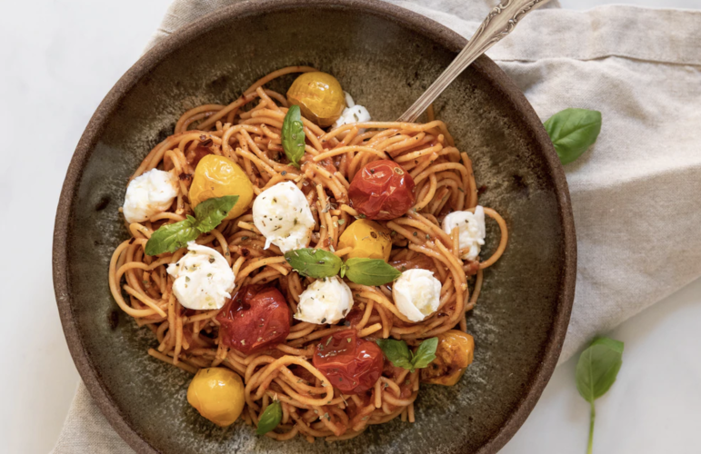

Video instructivo:
Macarrones de coliflor con salsa cremosa de brócoli
Porciones 4
Tiempo de preraración: 1 hora.
Ingredientes:
- Macarrones de coliflor VeggiePasta: 500g.
- Pechuga de pollo: 1 unidad.
- Crema de leche: 200cc
- Brocoli: 150g
Indicaciones:
- Pon a cocer la zanahoria cortada en trozos en agua por 2 minutos
- Agrega los tomates a las zanahorias y la porción de apio.
- Deja hervir por 7 minutos
- En una olla pon a hervir agua. Una vez que veas que el agua burbujea significa que ya esta hirviendo. Agrega la pasta.
- Revisa el tiempo de cocción de la pasta en el empaque donde venía. Por lo general cuando se trata de pasta integran o de arroz y quinoa el tiempo de cocción es un poco mayor. La pasta de garbanzo se cuece más rápido.
- Una vez que la pasta este al dente tira el agua y vuelve a colocar en la olla.
- Tras 7 minutos aproximadamente tus vegetales ya deben estar cocidos.
- Deja hervir la salsa de 3 a 5 minutos
- Vierte la salsa a la pasta y mezcla.
- Servir y Disfrutar!

Video instructivo:
Spaguetti de zanahorias con tomates cherry confitados y bocconcinos
Porciones 6
Tiempo de preraración: 45 hora.
Ingredientes:
- Spaguetti de zanahorias VeggiePasta: 500g.
- Tomates cherry rojos y amarillos: 150g.
- Bocconcinos de muzzarella: 150g.
- Estracto de tomate: 1 cdita.
- Aceite de Oliva: A gusto.
Indicaciones:
- Precalentamos el horno a 180º con calor arriba y abajo pero sin aire.
- Disponemos en una bandeja para el horno los tomates cherry cortados por la mitad, bañamos con un chorrito de aceite de oliva y salpimentamos.
- Los metemos al horno durante 15 min o hasta que veamos que estén tiernos. Reservamos.
- Mientras ponemos todos los ingredientes para hacer el pesto y trituramos con la ayuda de una batidora hasta obtener una pasta homogénea. Reservamos
- Ponemos una olla con abundante agua y un puñado de sal a hervir. Cuando rompa a hervir añadimos la pasta y cocemos durante 7 minutos.
- Escurrimos la pasta y regamos con un chorrito de aceite de oliva para que no se pegue.
- Vierte la salsa a la pasta y mezcla.
- Servir y Disfrutar!

Video instructivo:
Tallarines de zuchinis con pesto y basílico
Porciones 4
Tiempo de preraración: 70 minutos.
Ingredientes:
- Tallarines de zuchinis VeggiePasta: 500g.
- Pesto: 100cc.
- Crema de leche: 200cc
- Tomates secos: 150g
Indicaciones:
- En un sartén grande pon el aceite de oliva y los tomatitos cherry a fuego bajo/medio.
- Mientras ve haciendo la pasta de zucchini de la manera que tu prefieras.
- Cuando los tomates se empiecen a dorar, agrega la sal. Y cuando empiecen a soltar juguito pon el ajo y revuelve con cuidado.
- Deja hasta que el ajo esté suave, prueba de sal y termina con pimienta negra recién molida. Agrega la pasta de zucchini al sartén con los tomates. Deja que toda la pasta se cubra bien por la salsa, deja en el sartén mas o menos 5 minutos. Sirve inmediatamente.
- Agrega la pasta de zucchini al sartén con los tomates. Deja que toda la pasta se cubra bien por la salsa, deja en el sartén mas o menos 5 minutos. Sirve inmediatamente.
- Para hacer el “queso parmesano” en un sartén o en el hornito tostador tuesta las nueces por dos o tres minutos, ten cuidado que no se quemen. Sácalas del sartén u horno y déjalas enfriar. Ponla el tazón de un procesador junto con la sal, la levadura de cerveza y la ralladura del limón. Dale pulsar varias veces hasta que las nueces estén totalmente molidas y todo esté bien integrado.
- Rocíalo encima de la pasta cuando esté terminado.
- Servir y Disfrutar!